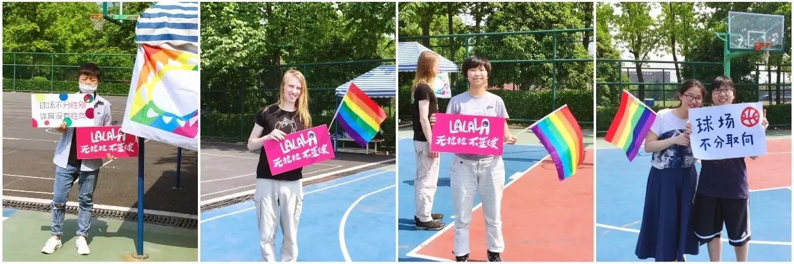
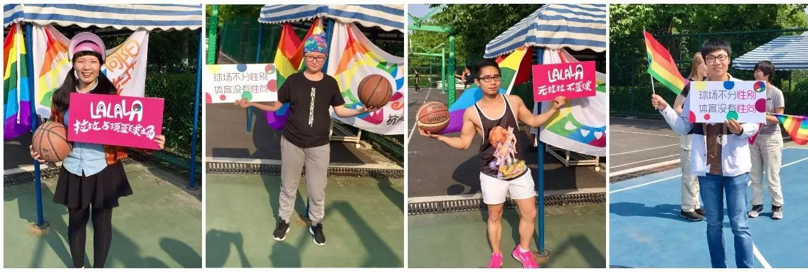
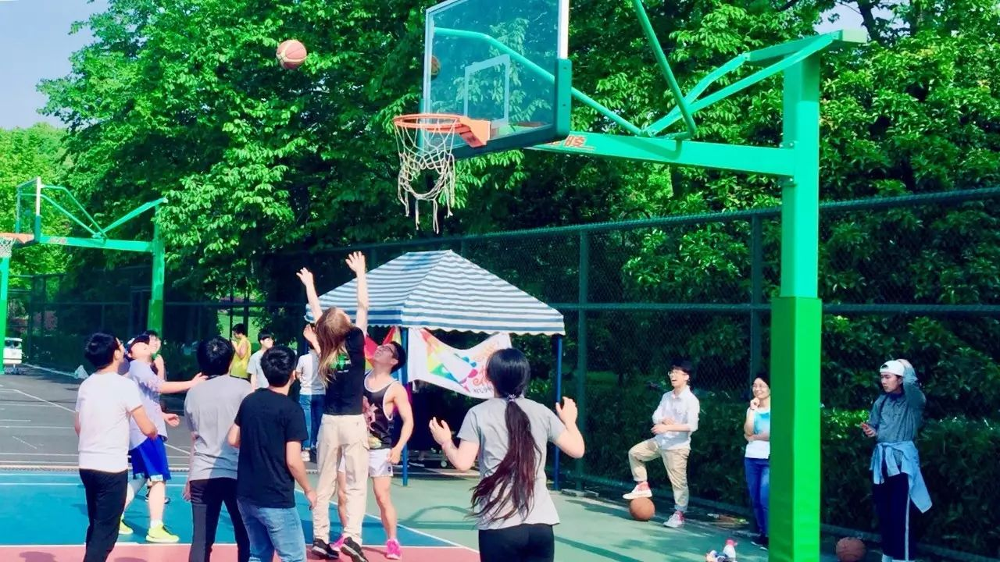
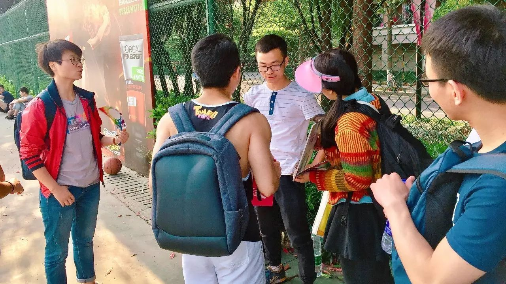

拉拉占领篮球场 | 今天我们都是拉拉！

4月16日下午， 在华中科技大学的校园里，有两名身着篮球服的女生举着一条内容为“维护中华民族传统伦理 捍卫社会主义核心价值 抵制西方腐朽思想侵蚀 让同性恋远离大学校园”的横幅。此外，当事人还在网上发表了更加骇人听闻的恐同言论。（更多详情可查看华科事件丨有人恐同，有人心痛，谁之过？）
为了响应华科事件，前几天酷儿论坛和向阳花开号召大家一起到浙江大学篮球场进行反歧视倡导活动。今天，有许多小伙伴赶到了现场，和我们一起向周围的朋友传播有关性少数人群的知识。如果你今天未能来到现场也不要遗憾，瓜瓜现在就为你带来第一手的现场报道！

下午两点左右，少部分人就已经赶到了浙大紫金港紫云篮球场，占领了一处帐篷并挂起了彩虹旗，之后也陆续有小伙伴赶来支持。

· 前来支持活动的小伙伴们
我们在举着口号牌拍照后，便开始在篮球场走动并向路人游说，解释本次活动的原因和意义，向TA们发放关于多元性别的资料并邀请TA们和我们一起合照。

· 前来支持活动的小伙伴们
大部分人在听过我们的解释后都欣然接受了邀请，有少部分人表示支持但是委婉拒绝了合照的请求，只有两人表示了强烈反感并说“觉得恶心”。

· 支持多元的打篮球的朋友们
在倡导活动间隙，我们也在篮球场开展了别开生面的“拉拉篮球赛”。

· 倡导间隙打篮球的小伙伴们

阿园：
学校篮球场里打球的人大都不是本校学生，而是一些校外人士，他们代表了来自社会的声音，通过与他们的沟通我们得到了不少支持，但也能大致看出社会上对于性少数群体普遍存在的一些歧视与误解。例如，我们逐个场地进行倡导的时候，有人说出了“上帝给了你一杆枪，你却用来当搅屎棍”这样满怀人格侮辱的言论；有人担心与我们合照后他们也会被视为“同性恋”；有人直接说，“我不支持，我觉得同性恋很恶心，我不接受同性恋发生在自己身边”，并且拒绝与我们进行更多交流。听到这些话，我觉得很难过，也很愤怒，但我也同情他们，并为他们感到可悲。

· 小伙伴们在游说路人
我长期呆在学校里，身边的人对性少数群体都比较友好，这样的安稳使我松懈，我甚至觉得“社会应该也就是这样吧”，然而事实上并不是，社会对性少数群体的包容与理解还远远不够。那么，我们应该怎么办呢？我们应该我们小心翼翼地，讨好每一个人，比如上面提到的那些人，也要极力争取他们的支持和理解吗？我认为没有必要。他不支持对我又有什么影响呢？他恶心到的只是他自己。我们大可放弃一些人，毕竟，作为拥有特权的多数，是他们应该来尊重我们，而不是我们有义务去获得他们的尊重，并且，我们也不需要活在每一个人的认可之中。

· 支持多元的打篮球的朋友们

今天的活动可以说是圆满结束了，但是我们为多元的努力不会就此停止。希望我们的声音能够被越来越多的人听到，性少数可以被越来越多地看到。听到不一样的声音，看到不一样的存在，才是了解和尊重的前提。
预告一下，明天会有对于本次活动更深入地思考哦~

*推荐阅读*